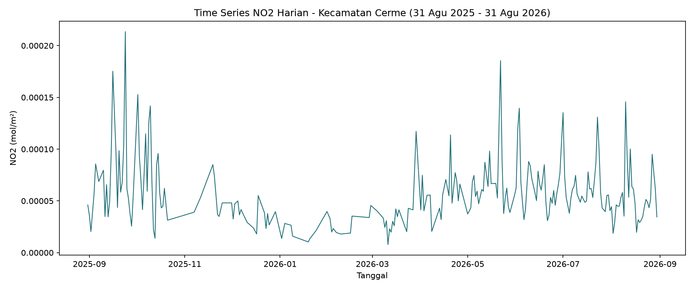
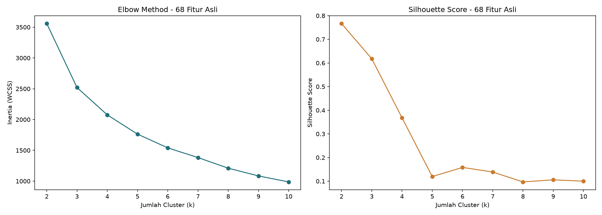

Tugas 4: Eksplorasi Data, Penjelasan Fitur, PCA & K-Means Clustering#
1. Eksplorasi Data (EDA): Time Series 3 Polutan#
Dilakukan eksplorasi time series untuk 3 polutan di Kecamatan Cerme: CO, NO2, SO2, rentang 31 Agustus 2025 – 31 Agustus 2026.
Source code: eda_tugas4.py
Contoh time series NO2

Catatan: seluruh polutan memenuhi syarat missing value maksimum 15% sebelum diproses lebih lanjut (deteksi outlier + imputasi, lihat Tugas 3).
2. Konsep Dasar & Rumus Fitur TSFEL#
TSFEL mengelompokkan 68 fitur ke dalam 4 domain: Statistical (20), Temporal (16), Spectral (26), dan Fractal (6).
Rumus, contoh hitung manual, dan pembuktian dengan TSFEL untuk fitur-fitur representatif tiap domain: verifikasi_fitur_tsfel.py
Deskripsi Singkat 68 Fitur#
Domain Statistical (20 fitur)#
Fitur |
Deskripsi Singkat |
|---|---|
abs_energy |
Jumlah kuadrat seluruh nilai sinyal; menunjukkan total “energi” sinyal. |
average_power |
Rata-rata daya sinyal (energi dibagi jumlah titik). |
calc_max |
Nilai tertinggi dalam sinyal. |
calc_mean |
Rata-rata (mean) seluruh nilai sinyal. |
calc_median |
Nilai tengah sinyal setelah diurutkan. |
calc_min |
Nilai terendah dalam sinyal. |
calc_std |
Simpangan baku (standard deviation); ukuran sebaran data. |
calc_var |
Variansi; kuadrat dari simpangan baku. |
ecdf |
Empirical Cumulative Distribution Function; peta distribusi kumulatif nilai sinyal. |
ecdf_percentile |
Nilai sinyal pada persentil tertentu dari ECDF. |
ecdf_percentile_count |
Jumlah titik data di bawah persentil ECDF tertentu. |
ecdf_slope |
Kemiringan garis ECDF antar dua persentil. |
entropy |
Ukuran ketidakteraturan/ketidakpastian distribusi nilai sinyal. |
hist_mode |
Nilai yang paling sering muncul (modus) berdasarkan histogram sinyal. |
interq_range |
Interquartile Range (IQR); selisih antara kuartil 3 dan kuartil 1. |
kurtosis |
Ukuran “keruncingan” distribusi data dibanding distribusi normal. |
mean_abs_deviation |
Rata-rata dari nilai absolut selisih tiap titik terhadap mean. |
median_abs_deviation |
Median dari nilai absolut selisih tiap titik terhadap median. |
rms |
Root Mean Square; akar dari rata-rata kuadrat nilai sinyal. |
skewness |
Ukuran kemencengan/asimetri distribusi data. |
Domain Temporal (16 fitur)#
Fitur |
Deskripsi Singkat |
|---|---|
auc |
Area Under Curve; luas area di bawah kurva sinyal. |
autocorr |
Autokorelasi; seberapa mirip sinyal dengan versi tergesernya sendiri. |
calc_centroid |
Titik berat (centroid) sinyal berdasarkan waktu. |
distance |
Estimasi panjang lintasan sinyal (jarak kumulatif antar titik berurutan). |
lempel_ziv |
Ukuran kompleksitas sinyal berdasarkan algoritma kompresi Lempel-Ziv. |
mean_abs_diff |
Rata-rata nilai absolut selisih antar titik berurutan. |
mean_diff |
Rata-rata selisih (tanpa nilai absolut) antar titik berurutan. |
median_abs_diff |
Median dari nilai absolut selisih antar titik berurutan. |
median_diff |
Median dari selisih antar titik berurutan. |
negative_turning |
Jumlah titik lembah (local minimum) pada sinyal. |
neighbourhood_peaks |
Jumlah puncak lokal dalam suatu jendela/tetangga tertentu. |
pk_pk_distance |
Peak-to-peak distance; selisih antara nilai maksimum dan minimum. |
positive_turning |
Jumlah titik puncak (local maximum) pada sinyal. |
slope |
Kemiringan garis tren linear sinyal. |
sum_abs_diff |
Jumlah total nilai absolut selisih antar titik berurutan. |
zero_cross |
Jumlah kali sinyal melewati/menyentuh nilai nol. |
Domain Spectral (26 fitur)#
Fitur |
Deskripsi Singkat |
|---|---|
fundamental_frequency |
Frekuensi dasar/utama yang mendominasi sinyal. |
human_range_energy |
Proporsi energi sinyal pada rentang frekuensi yang relevan bagi manusia. |
lpcc |
Linear Prediction Cepstral Coefficients; fitur berbasis prediksi linear sinyal. |
max_frequency |
Frekuensi dengan kekuatan (power) tertinggi. |
max_power_spectrum |
Nilai power spectrum tertinggi. |
median_frequency |
Frekuensi tengah dari distribusi power spectrum. |
mfcc |
Mel-Frequency Cepstral Coefficients; representasi bentuk spektrum meniru persepsi pendengaran manusia. |
power_bandwidth |
Lebar pita frekuensi yang mengandung sebagian besar energi sinyal. |
spectral_centroid |
“Titik berat” spektrum frekuensi sinyal. |
spectral_decrease |
Ukuran seberapa cepat energi spektrum menurun terhadap frekuensi. |
spectral_distance |
Jarak antara bentuk spektrum sinyal dengan garis linear referensi. |
spectral_entropy |
Ukuran ketidakteraturan distribusi energi pada spektrum frekuensi. |
spectral_kurtosis |
Keruncingan distribusi energi spektrum. |
spectral_positive_turning |
Jumlah titik puncak lokal pada spektrum frekuensi. |
spectral_roll_off |
Frekuensi di mana persentase tertentu dari energi total spektrum tercapai. |
spectral_roll_on |
Kebalikan dari roll-off, dihitung dari sisi frekuensi rendah. |
spectral_skewness |
Kemencengan distribusi energi spektrum. |
spectral_slope |
Kemiringan tren energi spektrum terhadap frekuensi. |
spectral_spread |
Sebaran/lebar distribusi energi di sekitar spectral centroid. |
spectral_variation |
Variasi bentuk spektrum antar segmen sinyal. |
spectrogram_mean_coeff |
Rata-rata koefisien dari spectrogram (representasi frekuensi-waktu) sinyal. |
wavelet_abs_mean |
Rata-rata nilai absolut koefisien wavelet sinyal. |
wavelet_energy |
Total energi dari koefisien wavelet. |
wavelet_entropy |
Ukuran ketidakteraturan distribusi energi wavelet. |
wavelet_std |
Simpangan baku koefisien wavelet. |
wavelet_var |
Variansi koefisien wavelet. |
Domain Fractal (6 fitur)#
Fitur |
Deskripsi Singkat |
|---|---|
dfa |
Detrended Fluctuation Analysis; mengukur korelasi jangka panjang dalam sinyal. |
higuchi_fractal_dimension |
Dimensi fraktal sinyal berdasarkan metode Higuchi; ukuran kompleksitas bentuk sinyal. |
hurst_exponent |
Mengukur kecenderungan sinyal: tren persisten, acak, atau anti-persisten. |
maximum_fractal_length |
Panjang maksimum kurva fraktal sinyal pada skala tertentu. |
mse |
Multiscale Entropy; ukuran kompleksitas sinyal pada berbagai skala waktu. |
petrosian_fractal_dimension |
Dimensi fraktal berdasarkan metode Petrosian; alternatif lebih cepat dari Higuchi. |
Fitur yang Menjadi Tanggung Jawab Individu#
Sesuai pembagian kelas, dua fitur berikut dijelaskan secara mendalam (deskripsi + rumus + perhitungan manual + pembuktian TSFEL, untuk 3 polutan CO/NO2/SO2):
mfcc (domain Spectral):
fitur-mfcc-penjelasan.md| script:verifikasi_mfcc_3polutan.pynegative_turning (domain Temporal):
fitur-negative-turning-penjelasan.md| script:verifikasi_negative_turning_3polutan.py
3. Ekstraksi Fitur Satu Kelas#
Fitur diekstraksi untuk 3 polutan (CO, NO2, SO2) × 68 fitur = 204 fitur per kecamatan, kemudian digabung untuk seluruh kelas.
File per polutan:
ekstraksi_fitur_co.csv,ekstraksi_fitur_no2.csv,ekstraksi_fitur_so2.csvDigabung menjadi:
ekstraksi_fitur_204_gabungan.csv(36 mahasiswa × 204 fitur)Script penggabungan:
gabungkan_204_fitur.py
4. PCA (Reduksi Dimensi ke 37 Komponen) & Penentuan Jumlah Cluster Terbaik#
Dikerjakan dengan 2 cara (code dan tools), pada 2 dataset (204 fitur gabungan, dan 68 fitur NO2 saja), untuk saling membandingkan hasil.
4a. Menggunakan Code (Python)#
Source code: pca_clustering_tugas4.py
Langkah: Standarisasi (Z-score) → PCA (37 komponen) → K-Means dengan berbagai k (2-10) → Silhouette Score untuk menentukan k terbaik.
Hasil:
Dataset |
Jumlah Sampel |
k Terbaik |
Silhouette Score |
|---|---|---|---|
204 fitur (CO+NO2+SO2) + PCA 37 komponen |
36 |
2 |
0,7668 |
204 fitur (CO+NO2+SO2), tanpa PCA |
36 |
2 |
0,7668 |
68 fitur (NO2 saja) + PCA 37 komponen |
37 |
2 |
0,7455 |
68 fitur (NO2 saja), tanpa PCA |
37 |
2 |
0,7455 |


Hasil label cluster per kecamatan: hasil_clustering_204fitur.csv
4b. Menggunakan Tools (KNIME)#
Workflow: CSV Reader → Column Filter → Normalizer (Z-score) → PCA (37 komponen) → k-Means (k=2...10) → Silhouette Coefficient

k |
Silhouette Score (KNIME, 204 fitur) |
|---|---|
2 |
0.047 |
3 |
0.338 |
4 |
0.101 |
5 |
-0.016 |
6 |
0.147 |
7 |
0.115 |
8 |
0.048 |
9 |
0.022 |
10 |
0.013 |
k terbaik menurut KNIME: K=3 |
4c. Perbandingan Code vs Tools#
Analisis dengan Python (sklearn) menunjukkan bahwa jumlah cluster terbaik adalah k=2 dengan nilai silhouette 0.7668. Sedangkan analisis menggunakan KNIME menghasilkan nilai rata-rata silhouette yang berbeda:
k=2 → 0.047 k=3 → 0.101 k=4 → 0.118 dan seterusnya, sehingga KNIME menyimpulkan k terbaik adalah 3.
Perbedaan ini muncul karena adanya perbedaan preprocessing dan metode perhitungan silhouette antara Python dan KNIME (misalnya normalisasi data, jumlah komponen PCA, atau cara menghitung jarak).
5. Seberapa Baik Data Ini Di-cluster?#
Silhouette Score tertinggi (0,77 untuk 204 fitur; 0,75 untuk 68 fitur NO2) secara umum tergolong baik (mendekati 1). Namun perlu dicatat: dari hasil clustering k=2, distribusi anggota cluster sangat timpang, 35 dari 36 kecamatan masuk 1 cluster besar, dan hanya 1 kecamatan (outlier) masuk cluster terpisah. Artinya, skor silhouette yang tinggi di sini lebih mencerminkan keberadaan 1 outlier ekstrem yang terpisah jauh, bukan pembagian 2 kelompok besar yang seimbang secara substansi.
Kesimpulan: dataset ini “cukup baik” untuk di-cluster secara matematis, tetapi interpretasinya perlu hati-hati dan perlu investigasi lebih lanjut terhadap kecamatan yang jadi outlier, dan mempertimbangkan k=3 sebagai alternatif untuk melihat apakah kelompok besar tadi punya sub-struktur yang lebih bermakna.